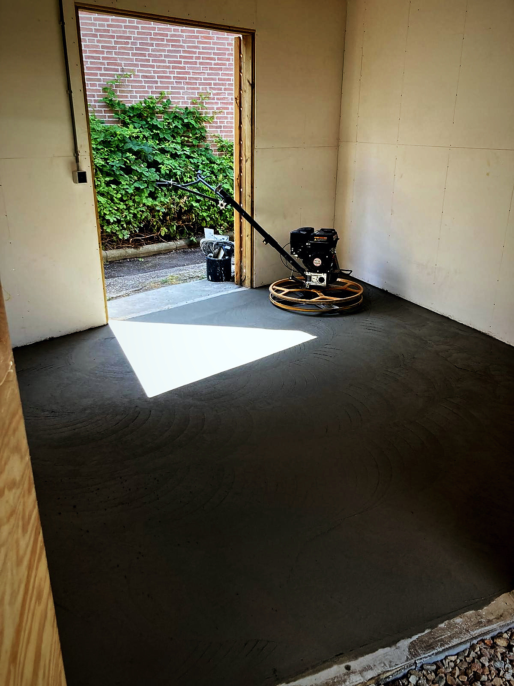

01↗
Betonvloeren
Gestort, geëgaliseerd en machinaal gevlinderd

Gevlinderde betonvloeren, vlieringen, carports en Velux-dakramen. Ozcan en zijn ploeg komen op de afgesproken dag, maken het af zoals besproken en laten de boel netjes achter.
Beweeg over een kaart — de map schuift open en onthult het werk. Ernaast staat alles wat we binnen die dienst oppakken.
Gestort, geëgaliseerd en machinaal gevlinderd
Binnen en buiten, van een garage tot een compleet terras — inclusief isolatie, wapening en vloerverwarming.

Van ongebruikte zolder naar volwaardige kamer
Van draagconstructie tot het laatste likje verf — u kunt er zo intrekken.

Maatwerk in hout, afgewerkt tot in de puntjes
In Douglas- of eikenhout, afgedekt met EPDM en nette boeidelen — passend bij uw woning.

Erkend montagepartner — altijd waterdicht
Als erkend Velux-montagepartner met de officiële sets — netjes ingepast en afgewerkt.

Van ruwbouw tot de laatste lijst
Alles wat van een ruimte een afgewerkt geheel maakt — tot en met het stuc- en schilderwerk.

Het fundament onder al het werk
Stevig beginnen — van strokenfundering tot betonpoeren en vorstranden.
Geen verrassingen achteraf. U weet van tevoren wat er gebeurt, wat het kost en wanneer het klaar is.
Gratis en vrijblijvend. We bekijken de situatie ter plaatse, denken mee over wat mogelijk is en zeggen eerlijk wanneer iets geen goed idee is.
Vaste prijs, heldere omschrijving van het werk en de materialen, en een realistische planning. Wat erin staat, is wat u betaalt.
Op de afgesproken dag, met een opgeruimde werkplek en garantie op het werk. Is er achteraf iets, dan komen we terug.
Openbaar na te lezen op Werkspot en Google — waar alleen mensen schrijven die de klus echt lieten uitvoeren.
 Google · 97 reviews
Google · 97 reviews"OK Timmerwerken levert vakwerk. Er werd goed meegedacht en alles is netjes op de bestaande situatie aangepast. Mooi en degelijk Douglas hout, EPDM-dak en keurig afgewerkte boeidelen."
"Ozcan is een sterke allround aannemer die actief meedenkt en oplossingsgericht werkt. Van het doorbreken van een dragende muur tot een nieuwe vliering: alles vakkundig en strak uitgevoerd."
"Vriendelijk, betrouwbaar, transparant en goede communicatie. Ik wist niets van beton en vloeren, en Ozcan gaf me uitstekend advies op basis van wat ik nodig had."

Portret volgtAchter OK Timmerwerken staat Ozcan. In de reviews die klanten schrijven staat zelden de bedrijfsnaam — er staat Ozcan. Dat zegt genoeg: u heeft één vast aanspreekpunt dat meedenkt, de klus zelf meedraait en 'm afmaakt zoals besproken.
Sinds 2019 actief in Gorinchem en de regio Zuid-Holland, met een vaste ploeg vakmensen. Erkend VELUX Montagepartner, en thuis in alles van gevlinderde betonvloeren tot complete verbouwingen.
Vertel kort wat u van plan bent. We reageren meestal binnen een dag — bellen of appen mag natuurlijk ook.